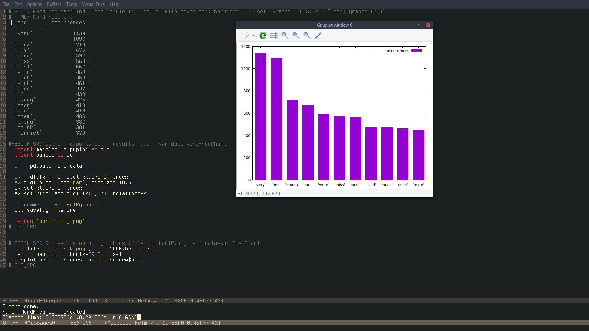
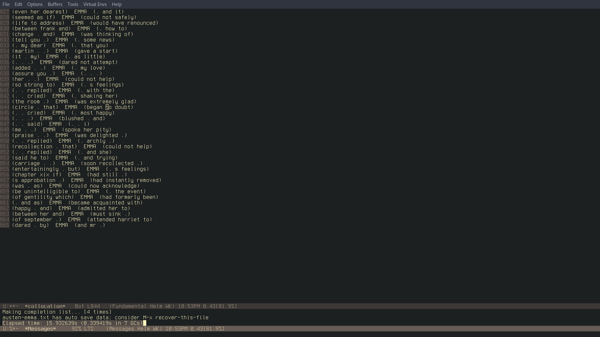

Linguistic-mode: An Emacs Package for Corpus Analysis
A brief blog post to present and talk about Linguistic-mode, a package for Emacs that can perform different corpus analysis tasks such as ngram or word frequency, collocation, concordance and more. I started writing this mode as a hobby and then it just got out of hand. Now it can be found on MELPA and new features will soon be added.
This will not be a guide per se, if you want to have technical information you can find the manual here and the repository here.
About Emacs and Linguistics
I truly believe that Emacs can be a linguist's best friend. The software comes with some built-ins that can surely be useful for a linguist who is starting into the computational side of things or who wants to work in corpus analysis. Word counts, moving by sentence or paragraph and especially RegEx searches and substitutions are perfect introductory tools. Aside from these, however, reasons to use Emacs in linguistics are obviously:
- AUCTeX
- Elpy
- EIN
- ESS
Sooner or later all linguistic students find out about LaTeX, are required to use it or hear about it. With AUCTeX it is possible to work smoothly in LaTeX and PDF Viewer allows to have a preview of your pdf always in sight. This could very well be the only reason to have Emacs installed on your machine, but if you start working in corpus linguistics then ESS (Emacs Speaks Statistics) gives you a lightweight IDE for R, while, if you find yourself using Python for corpus analysis or computational linguistics, Elpy and EIN can provide a nifty and essential IDE for Python. There are surely other general advantages of using Emacs, but these can be found out easily in any guide or blog post on Emacs.
Linguistic-mode
The mode just developed from a nice script I found some time ago on stackoverflow. I was tinkering with Elisp and wondering how I could build a word frequency function like the one in Python's NLTK library. It turned out, obviously, that someone had already asked a similar question on stackoverflow and the user xuchunyang gave this answer inspired to a previous similar one. Once I got the function fixed to my liking, I then wanted to try and see whether something similar with N-Grams was possible, and from there it just snowballed into what the mode is now. At the moment, the mode allows to have word and ngram frequencies with snippets of code in Python, Gnuplot and R ready to use to plot the results. Additionally it is possible to carry out collocation searches and expand them to make them concordance-like. The collocation function may take some time to compute, but for example to find all the occurrences of the word "Emma" in £Emma£ by Jane Austen, the function took about 15 seconds. In the makings there is a function to perform proper concordance searches with faster results than the collocation one, improvements to the latter and functions to have information on the number of sentences in a corpus and their average lengths.
The next screenshots show the functions' results and their time:


The computation times for the N-Gram frequency functions are far longer than these. However, the mode is still being worked on and any feedback or contribution is more than welcome, especially since I am not exactly an expert in programming and Elisp is a language that I have only recently started to study more seriously. You can leave a comment here for feedback or suggestions, email me or open an issue on GitHub.